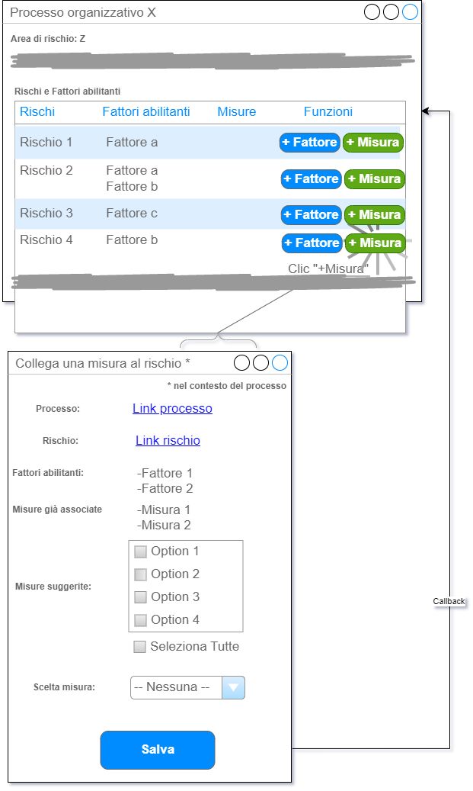

La funzionalità di associazione tra una misura e un rischio avviene nel contesto di un processo, perché, come anticipato sopra, la granularità richiesta è tale che non è possibile ereditare i processi dai rischi, dal momento che, in tal caso, non sarebbe possibile escludere una parte dei processi stessi o aggiungerne altri collegati ad altri rischi; allo scopo di rappresentare questa granularità è stata prevista una relazione ternaria che collega il processo al rischio e alla misura di prevenzione.
Lato interfaccia, si sceglie di gestire l’associazione tra le misure e i rischi nella sezione dedicata ai rischi e fattori abilitanti entro la pagina del processo censito a fini anticorruttivi.
Notare che i fattori abilitanti in questo elenco sono perfettamente ortogonali alle misure, nel senso che non è detto che i fattori abilitanti associati ai rischi nell’elenco siano gli stessi che sono collegati alle misure tramite la loro tipologia! In altre parole, rispetto a una misura di prevenzione non vi è nessuna correlazione obbligata tra i fattori abilitanti ereditati tramite le sue tipologie e i fattori abilitanti collegati ai rischi a cui la misura stessa viene relazionata.
Notare, inoltre, che nel successivo mockup (Figura 23) si nota chiaramente che l’associazione di una misura è sul rischio (p.es. Rischio 2), non sulla coppia Rischio-Fattore abilitante (p.es. Rischio 2-Fattore a o Rischio 2-Fattore b).
Per associare una misura a un rischio, nel contesto di un processo, bisogna quindi cliccare sul bottone “+ misura”.
Ciò provocherà l’apertura di una nuova pagina, in cui saranno consultabili gli estremi di rischio, processo e fattori abilitanti (inseriti tramite la ternaria rischio-processo-fattore abilitante); saranno anche consultabili le eventuali misure già associate al rischio entro il contesto del processo.
Verranno presentate poi le misure proposte come associabili, individuate in base alla relazione tra la tipologia, o tipologie, della misura e i fattori abilitanti del rischio stesso.
In altri termini, in questo punto noi stiamo prendendo in esame uno specifico rischio che ha collegati uno o più fattori abilitanti (tramite la ternaria); se uno o più di questi fattori sono anche collegati a una o più misure, tramite la loro tipologia, le misure stesse verranno mostrate nell’elenco delle misure suggerite. A questo punto l’utente può scegliere una o più di queste misure suggerite, selezionando le relative checkbox, o anche selezionarle tutte tramite una speciale checkbox fuori elenco.
Dopo aver associato una o più delle misure suggerite, è anche possibile per l’utente scegliere una misura non presente tra quelle suggerite, ma selezionabile dalla dropdown list che contiene tutte le misure. Cliccando su “Salva” verranno generate tante associazioni tra misura-rischio-processo quante sono queste terne univoche. Se l’utente deve aggiungere ulteriori misure al rischio, dopo aver salvato le scelte dovrà ricliccare sul bottone “+ misura” e scegliere dall’elenco a discesa una misura ulteriore, ripetendo questa operazione per tutte le misure non suggerite che bisogna associare al rischio.
Ogni volta che l’utente salva le scelte, verrà riportato alla pagina del processo che ora, nella sezione relativa al rischio, mostrerà le misure appena associate.
